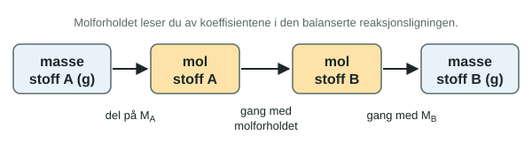
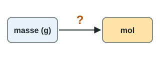

Støkiometriske beregninger
Hvor mye råstoff trenger reaktoren? Hvor mye produkt kan du få? Hvor mye lut trengs for å nøytralisere en syretank? Slike spørsmål løser du med støkiometri: beregninger som bygger på en balansert reaksjonsligning.
Koeffisientene gir molforholdet
Koeffisientene i en balansert reaksjonsligning forteller hvor mange mol av hvert stoff som reagerer med hverandre. Det kalles molforholdet.
\[ \ce{2Cu + O2 -> 2CuO} \]
Ligningen betyr: 2 mol kobber reagerer med 1 mol oksygen og gir 2 mol kobberoksid. Molforholdet mellom Cu og CuO er 2 : 2, altså 1 : 1.
Molforholdet gjelder antall mol, ikke gram. 2 g kobber gir ikke 2 g kobberoksid. Derfor må du alltid regne om til mol først.

Eksempel 1: Fra laben
Oppgave: Du varmer 5,00 g kobberpulver slik at alt reagerer med oksygen i lufta. Hvor mye kobberoksid kan du få? \( \ce{2Cu + O2 -> 2CuO} \)
- Mol Cu: \( n = \dfrac{5{,}00 \text{ g}}{63{,}55 \text{ g/mol}} = 0{,}0787 \text{ mol} \)
- Molforhold: Cu : CuO = 2 : 2. Det dannes like mange mol CuO: 0,0787 mol.
- Molmasse CuO: \( 63{,}55 + 16{,}00 = 79{,}55 \text{ g/mol} \)
- Masse CuO: \( m = 0{,}0787 \text{ mol} \cdot 79{,}55 \text{ g/mol} = 6{,}26 \text{ g} \)
Svar: Du kan få 6,26 g kobberoksid. Massen øker med 1,26 g, som er oksygenet fra lufta.
Eksempel 2: Fra prosessen
Oppgave: En tank med avfallssyre inneholder 10,0 kg svovelsyre. Den skal nøytraliseres med natriumhydroksid. Hvor mange kilo NaOH trengs?
\[ \ce{H2SO4 + 2NaOH -> Na2SO4 + 2H2O} \]
- Mol H2SO4: \( n = \dfrac{10\,000 \text{ g}}{98{,}09 \text{ g/mol}} = 101{,}9 \text{ mol} \)
- Molforhold: H2SO4 : NaOH = 1 : 2. Det trengs \( 2 \cdot 101{,}9 = 203{,}9 \text{ mol NaOH} \)
- Masse NaOH: \( m = 203{,}9 \text{ mol} \cdot 40{,}00 \text{ g/mol} = 8156 \text{ g} \)
Svar: Det trengs 8,16 kg NaOH.
Svaret skal ikke være mer nøyaktig enn målingene. Har du målt 5,00 g (tre gjeldende sifre), oppgir du svaret med tre gjeldende sifre: 6,26 g, ikke 6,259 g. Regn med alle sifrene underveis, og rund av til slutt.
Hva skjer når det ikke er nok av den ene reaktanten, og hvorfor får du nesten aldri så mye produkt som regnestykket sier? Les fordypningen Begrensende reaktant og utbytte.
Svovelsyre og natriumhydroksid er etsende. Nøytralisering gir mye varme. Tilsett luten langsomt og med omrøring, og bruk vernebriller, hansker og frakk. I anlegget gjøres dette etter en egen prosedyre.
Test deg selv
Hva må du gjøre for å komme fra masse i gram til mol?

- gange med molmassen
- dele på molmassen
- gange med molforholdet
\( n = \dfrac{m}{M} \)
Hva forteller koeffisientene i en balansert reaksjonsligning?
- hvor mange gram som reagerer
- hvor mange mol som reagerer med hverandre
- hvor raskt reaksjonen går
Koeffisientene gir molforholdet, ikke masseforholdet.
\( \ce{N2 + 3H2 -> 2NH3} \). Hvor mange mol NH3 dannes av 6 mol H2?
- 2 mol
- 4 mol
- 6 mol
H2 : NH3 = 3 : 2. 6 mol · 2/3 = 4 mol.
\( \ce{H2SO4 + 2NaOH -> Na2SO4 + 2H2O} \). Hvor mange mol NaOH trengs for 0,50 mol H2SO4?
- 0,25 mol
- 0,50 mol
- 1,0 mol
Molforholdet er 1 : 2.
Du har målt 2,50 g. Hvordan oppgir du svaret 3,8146 g?
- 3,8146 g
- 3,81 g
- 4 g
2,50 g har tre gjeldende sifre, så svaret får også tre.
Ordliste
| Begrep | Forklaring | Engelsk |
|---|---|---|
| støkiometri | Beregning av mengder av stoffer som reagerer og dannes, ut fra en balansert reaksjonsligning. | |
| molforhold | Forholdet mellom antall mol av stoffene i en reaksjon. Det leses av koeffisientene. | |
| nøytralisering | Reaksjon mellom en syre og en base, der det dannes et salt og vann. | neutralization |
| gjeldende sifre | Sifrene i et måletall som er sikre, pluss det første usikre. De viser hvor nøyaktig tallet er. | significant figures |
Les mer
- Kjemien stemmer, kapittelet om støkiometri.
- Fagstoff: «Mol og molmasse» i emnet «Stoffmengde, konsentrasjon og fortynning».
Om kildene: Teksten, eksemplene og figurene på denne siden er laget for dette nettstedet. Siden bygger på undervisningsopplegg i kjemiprosess- og laboratoriefag ved Sauda vgs, som er utarbeidet med utgangspunkt i blant annet Kjemien stemmer, Laboranten og åpne nettkilder.